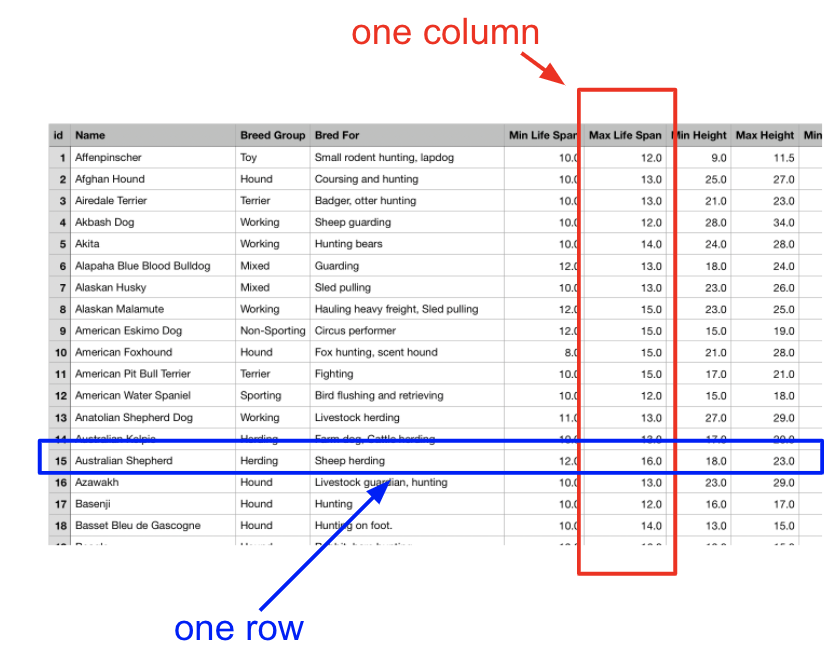
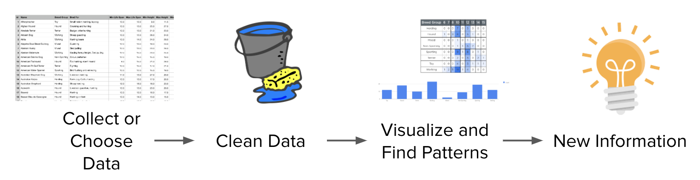

Lesson 4 - Datasets
At the end of this lesson, you will be able to:
- Develop a set of questions around a given dataset.
Dog data
Take a look at the Google Sheet below - it's full of data on dog breeds. Skim the different columns and let your curiosity wander. What specific questions could we answer with this data?
Visualizations
With any luck, visualizations can answer them! But why do people make visualizations out of data in the first place? Start with the raw table below: what is the intersection of 'Max Life Span' and 'Australian Shepherd' telling us? Exactly one fact - Australian Shepherds have a Max Life Span of 16 years.

One fact at a time is slow going, and the spreadsheet holds a lot of facts. The bar chart in figure 8.8 does better: it shows us the number of breeds at each Max Life Span. The x-axis gives the number of years, and the height of each bar gives the count - the number of dogs with a Max Life Span of that year. (You can estimate a count by comparing a bar's height against the numbers on the y-axis.) From this one chart we can see:
- The most common Max Life Span is 15 years, with 25 breeds.
- Only approximately 2 dog breeds have a Max Life Span of 8 years.
- No breeds have a Max Life Span of 9 years.
- (22 + 13 + 23 + 25 = 83) 83 out of 105 total breeds (look at the number of rows in the spreadsheet) or 83/105 = 79% of dog breeds have a Max Life Span between 12 and 15 years.

That's the whole point of visualizations: they let us take in lots of data at once and see patterns that are "invisible" if you just stare at the table.
Over the next few lessons we'll learn to make different types of visualizations - because different questions call for different charts!
Data analysis process
Data analysis tends to follow the same four steps, whatever the dataset:
- Collect or choose the data
- Clean the data
- Visualize and find patterns
- Obtain new information

Check for understanding!
In the next lessons, we'll dig into exactly how data gets turned into new information.